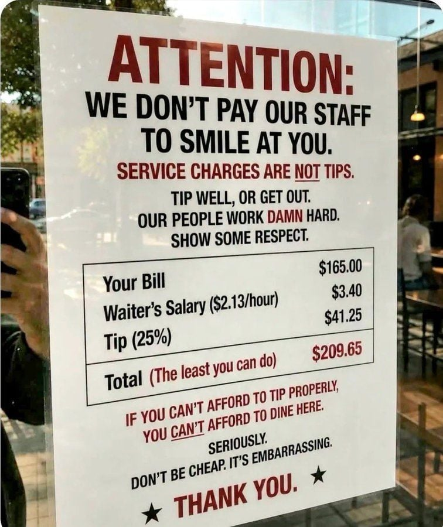
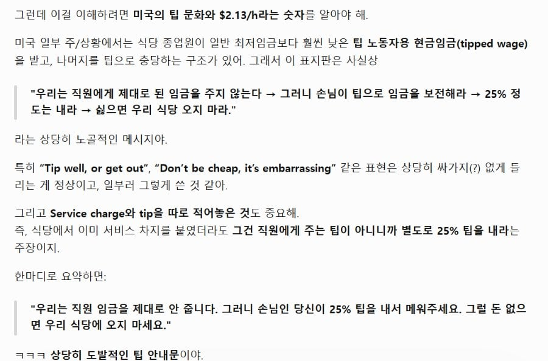

월급을 주세요


월급을 주세요
그런다고 음식값은 안내림 ㅇㅇ 애초에 저 팁은 고용주들이 노동자들 인건비 내기싫어서 고객에게 그 비용을 전가하는거임
노동자도 엄연히 피해자라는거임
WE DON'T PAY OUR ROBOTS TO SERVE AT YOU.
키오스크랑 셀프서빙도 팁내라하더라고
레딧에서는 AI라는데?
팁문화에 대한 좆같음을 중화시키기 위해 waitresspov 시리즈를 봅니다
AI래 이거
미국 사는 사람들에게 좀 궁금한데
팁이라는게 결국 총 임금에서 일정부분을 손님이 충당하는 사회적 시스템이라고 하면
그 팁(손님이 보전해주는 임금)만큼 음식값이 깎여있다는 인식이 사회 공통으로 깔려있나?
아니면 음식값도 제값이고 팁까지 엑스트라 챠지로 나가는 불합리함이라고 생각하나?
안불쾌했으면 논란까지도 안갔을듯?
여친이 서버로 일해봐서 팁을 잘 주는데, 받아본 입장에서 안 줄수가 없다고 함. 얘네들이 애초에 적은 시급과 팁으로 먹고 사는걸 가정하고 고용됐기 때문이기도하고
또 미국 애들은 서비스 업에 대한 직업 의식이 희박함. 우리나라는 시급만 제대로 나와도 착하게 일 잘하는데, 미국 애들은 그냥 키오스크 못 놓으니까 놓은 인간 수준임. 그런 애들이 친절해지려면 결국 인센티브가 있어야하는데, 그 인센티브가 결국 돈이고 돌고돌아 팁 문화임.
그냥 그러려니 하고 살아왔음에도 그렇지만 요새는 25퍼가 기본이라고 하는 거나 무슨 주문받고 앉아있는 자리에와서 오더 받는 서버면 몰라도, 햄버거랑 커피 카운터에서 주는 애들이 팁달라고 하는 요새 문화는 선넘는 것 같아서 계속 이야기 나오고 있음. 물론 적은 월급에 팁으로 먹고 사니까 어느정도 이해는 하는데, 미국에서도 제대로된 월급을 주고 팁문화를 없애자는 이야기도 나오긴 함.
실험적으로 저렇게 월급 올려주고 팁 안 주는 시도를 해본 식당이나 카페들이 있는데, 문제는 서버들, 특히 팁을 잘 버는 서버들은 그런 식당에서 일할 이유가 없음...
미국에서도 제대로된 월급을 주고 팁문화를 없애자는 이야기도 나오긴 함.
이라고 하는데 그럼 보수적인 주들은 그딴 빨갱이같은소리 하지 마라고 할거임 ㅇㅇ 공보험도 혐오하는새끼들이 오죽하겠냐
팁외에 직원 시간 급여도 빌에 포함시키는가베
미합 중국
미국 가본적없어서 잘모르는데 팁 25%면
예를들어서 10만원어치 먹으면 2만5천원을 팁으로 줘야하는건가?
계산은 12만5천?
ㅇㅇ 15가 기본이었는데 웰케 올랐지?
우한폐렴 이후로 폭등
난 10퍼 했었는데 엄청 올랐네
15%는 10년은 전일듯 존나오름ㅋㅋ
차라리 저딴 글을 쓰지 말고 음식 가격을 25프로 올려 팔지. 거기서 임금을 빼서 주면 되는거고.
게다가 '우리 직원은 팁 안받아요' 이렇게 쓰면 손님이 더 올지도?
그렇게하면 움직이는키오스크보다못하게 일한대 미쿡애들은
키오스크도 레베루가있는데 맥날수준임?
근데 그렇게 하면 사업자 소득으로 잡혀서 실제로는 직원들한테 그만큼 못 갈 걸?
그렇게 시도한 곳들이 있는데, 그러면 팁 많이 버는 직원들이 다 팁 주는 곳으로 이직해요
오히려 싫어한다던대 일하는 사람이
그렇게 하면 메뉴 표시가격이 타 레스토랑보다 비싸게 잡혀서 사람들이 안가고, 서버들은 서버대로 자기가 잘하든 못하든 고정급여를 받으니깐 싫어함. 그래서 팁 주는 레스토랑 가보면 늘 서버들이 테이블 주시하면서 눈 마주치면 후다닥 달려오고, 중간중간 음식 맛 괜찮냐, 뭐 더 필요한거 없냐, 커피나 물 리필 말안해도 해주고 그럼.
그렇게 한 가게도 있었지만 다 쳐망했어. 일 잘하는 직원은 그런 가게 안가고 폐급만 모이는 가게되는데 안망할수가 없다. 그리고 당장 보이는 음식 가격이 옆 가게보다 25%가 비싸다고? 손님 안온다
아니지
1. 우리는 우리 음식값에 우리가 지불해야하는 웨이터 법적근로임금을 너에게 지불요청할거고
2. 거기에 웨이터가 받아야하는 팁도 너에게 지불요청할거야.
아시바 그냥 셀프로하고말지
우리 직원은 damn hard하게 일을 하니 손님이 급료를 줘라 ㅋㅋㅋㅋㅋㅋㅋㅋㅋㅋㅋㅋㅋ
막상 또 팁 안받는 가게 차리면 안좋게 보는 사람들도 꽤많더라
월급좀 주라
역시 팁문화는 미개한 문화 ㅉㅉ
팁문화 자체는 이해가 가는데 좀 이상하게 변질 된 것 같음;
오디세우스를 미국에 파견해라
무슨 깡이지? 주변에 식당이 저기밖에 없거나 뭔가 독보적인 레시피를 가진 맛집인가?
식당은 둘째치고 커피 테이크아웃 하는데 팁달라는 애들이 진짜 양아치임
미국에서 키오스크로 주문하는데 팁 고르는 버튼 있길래 얼탱 없더라 내가 주문하는데 팁은 왜 니가 쳐받으려고해 하고 노팁 고름
ㄹㅇ ㅋㅋㅋㅋ 원래 패스트푸드나 투고하는건 팁 안주는게 당연했는데 이걸 팁 요구하는게 얼탱이가 없음
오만함으로 들여온 문화인데 이제 손도 못씀ㅋㅋㅋㅋ 법으로 막자니 물가 폭파시키는거
미국은 노동법 병신이냐?
텍사스 사는 애한테 들었는데 점심 괜찮게 먹었다 싶으면 $20 +팁 정도 나오고 그냥저냥 때웠다 싶으면 $12 + 팁 정도 나온다더라 근데 팁을 20~25%정도 내는데 15%정도 내면 종업원이 따지러 온다고....
내 구역(Territory)에서 밥먹으면서 나에대한 존경(Respect)이 이렇게 없냐고
대충 저런식으로 말한다 함
키오스크 서빙로봇 수출하면 됨?